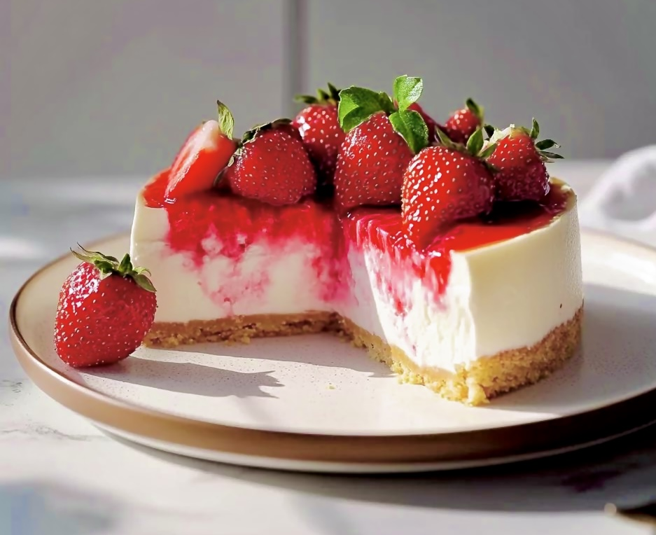

Prep Time: 30 mins
Cook Time: 1 hour
Serves: 8-10
Ingredients
Ingredients for the Crust:
-
2 cups of graham cracker crumbs
-
1/2 cup melted butter
-
1/4 cup sugar
Ingredients for the Filling:
-
24 oz softned cream cheese
-
1 cup sugar
-
3 large eggs
-
1 cup sour cream
-
2 tsp vanilla extract
-
2 cups of fresh sliced strawberries
-
Optional: Strawberry Jam
Instructions
-
Preheat your oven to 325ºF / 165ºC.
Mix the graham cracker crumbs, melted butter and sugar.
Press into a 9 inch baking pan.
-
Beat the cream cheese and sugar until they are smooth. Add eggs one at a time, mixing it in at a low speed.
-
Add sour cream and vanilla extract together and mix well until it is blended.
-
Pour half of the batter into the crust. Layer the some of the cut strawberries and then put the remaining batter on top. ( if you'd prefer strawberry jam instead, you could use that as a substitute for the middle of the cake. )
-
Bake for about 1 hour or until the center is almost set. Remove it from the oven and use a knife to unstick the dessert of the rim of the pan.
-
Let it cool, and then refridgerate it overnight.
Baking Tips
-
Make sure that all the ingredients are at room temperature before starting.
-
Don't overmix the batter to prevent cracks from forming.
-
Use fresh and ripe strawberries for the best flavours possible!